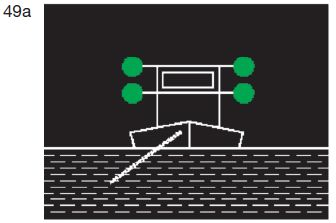
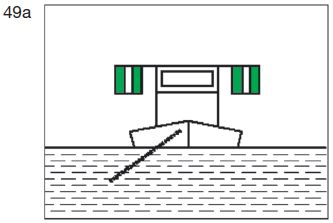
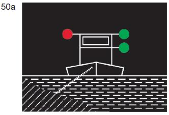
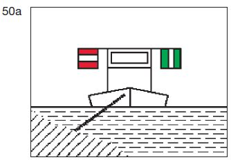
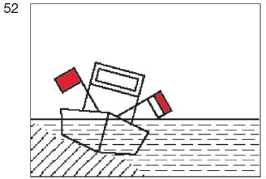

| übereinander zwei grüne gewöhnliche Lichter oder zwei grüne helle Lichter; |  |
|  |
|  |
| ein rotes gewöhnliches Licht oder ein rotes helles Licht in gleicher Höhe und von gleicher Stärke wie das nach Buchstabe a Doppelbuchstabe aa gezeigte oberste grüne Licht; |  |
|  |
|  |
| ein rotes gewöhnliches Licht und ein weißes gewöhnliches Licht oder ein rotes helles und ein weißes helles Licht, das rote Licht 1,00 m über dem weißen; |  |
| eine Flagge, deren obere Hälfte rot und deren untere Hälfte weiß ist, oder zwei Flaggen übereinander, die obere rot, die untere weiß, |  |
 |  |